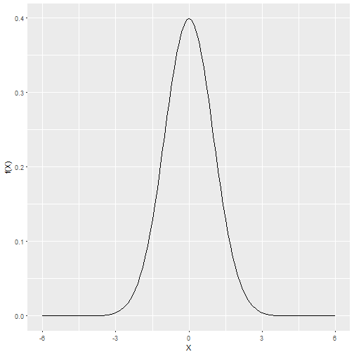

The purpose of this Shiny app is to allow the user to develop intuition about the normal curve.
It allows you to play around with a normal curve in the following ways:
Change the mean of the displayed distribution to any integer between -3 and 3 inclusive
Change the standard deviation of the displayed distribution between .5 and 6 in increments of .05
Choose the mininum and maximum x values to show on the plot
Zoom in on a portion of the plot by brushing
The following R code is evaluated and displayed
library (ggplot2)
## Warning: package 'ggplot2' was built under R version 3.3.3
xvalues <- seq(-6, 6, .1)
yvalues <- dnorm(xvalues, 0, 1)
g <- ggplot(data=data.frame(xvalues, yvalues), aes(x=xvalues, y=yvalues))
g + geom_line() + labs(x="X", y="f(X)")

- Edit YAML front matter
- Write using R Markdown
- Use an empty line followed by three dashes to separate slides!